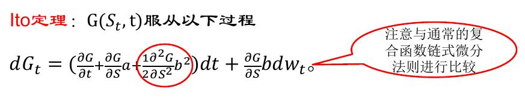
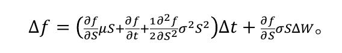

1. 数理金融（六）
关于股票价格的连续时间 随机过程
1.1.1. 布朗运动
什么是布朗运动
一个随机过程w(t) 称为 标准布朗运动，如果满足以下性质：
- w(0)=0,w(t)关于时间连续
- 在给定的长度为的时间区间上， w(t)的变化量服从期望为0、方差为的正态分布，即 。
- 在任意两个不互相重叠的时间区间上，变化量\Delta w是相互独立的。
- 第三个性质说明， w(t)服从马尔可夫过程，即w(t)在未来的概率分布只与当前值有关，而不依赖于在过去所遵循的特定路径。换句话说，该过程的当前值包含了对其未来做预测所需的全部信息。
利用matlab模拟[0,T]布朗运动
T=1; dt=1/1000; N=1001;
W=zeros(N,1);
for i=2:N
W(i)=W(i-1)+sqrt(dt)*randn; % randn是生成标准正态随机变量
end
plot([0:dt:T],W)
{kind=link}
布朗运动的一些应用
一维布朗运动的走势和股票价格曲线的走势看着非常相似，这变引起人们利用它来描述股票价格走势的兴趣。
布朗运动 的每一条轨道看起来是不光滑的，甚至是杂乱无章的，但它们是连续的。
值得注意的是布朗运动 的轨道是不可微的。
事实上，
1.1.2. Ito过程与Ito积分
相关定义
我们定义xt为Ito过程，如果:
是标准布朗运动$W_t$在t时刻的瞬间改变量， ~ .
和可以理解为 在t时刻的瞬间改变量的期望值和方差。𝑎称为过程的漂移率，𝑏称为 的扩散率。、
{kind=link}
股票价格过程
标准布朗运动不是描述股价运动的最佳选择：因为在任意一个时间区间上改变量的期望都是0.
在衍生产品定价中，我们假设服从 Black-sholes模型 是常数
是资产价格在无穷小的时间间隔内的变化量
是这段时间内的收益率
所以
这里称是一个 几何布朗运动； 被称作资产阶级的期望收益率； 被称为资产阶级的波动率。
Ito定理
假定 是t和 的二元函数， 服从Ito过程 
{kind=link}
Ito定理的应用
用Ito定理计算 Ito积分
{kind=link}
{kind=link}
1.1.3. Black-schols方程的推导和应用
假设股票价格遵循几何布朗运动，即 假定f为依赖于S的衍生产品价格，f(S,t)，根据Ito定理
{kind=link}
近似离散形式： 
{kind=link}
{kind=link}
由于投资组合在长度为\Delta t的时间上市无风险的，根据无套利原理，无风险投资组合的收益率等于无风险收益率，所以有
{kind=link}
- 欧式看涨期权的价格满足BC方程，其终值条件：
- 欧式看跌期权的价格满足BC方程，其终值条件：
注： 在BC方程中并未出现股票在真实世界里的期望回报率 ，代替的是无风险收益率，因此BC得到的期权价格和无关
{kind=link}
通过求解 BC方程，欧式看涨与看跌期权的价格如下：
{kind=link}